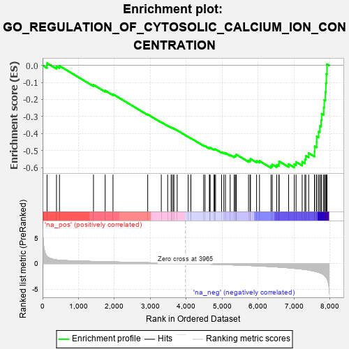
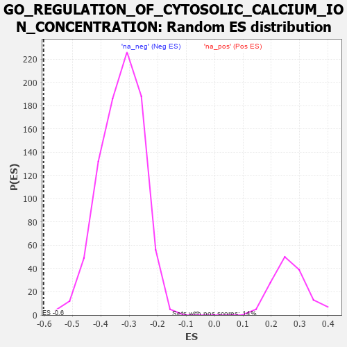

| | | Dataset | 7d |
| Phenotype | NoPhenotypeAvailable |
| Upregulated in class | na_neg |
| GeneSet | GO_REGULATION_OF_CYTOSOLIC_CALCIUM_ION_CONCENTRATION |
| Enrichment Score (ES) | -0.601914 |
| Normalized Enrichment Score (NES) | -1.8303336 |
| Nominal p-value | 0.0 |
| FDR q-value | 0.011037584 |
| FWER p-Value | 0.278 |
Table: GSEA Results Summary

Fig 1: Enrichment plot: GO_REGULATION_OF_CYTOSOLIC_CALCIUM_ION_CONCENTRATION
Profile of the Running ES Score & Positions of GeneSet Members on the Rank Ordered List
| PROBE | GENE SYMBOL | GENE_TITLE | RANK IN GENE LIST | RANK METRIC SCORE | RUNNING ES | CORE ENRICHMENT | | 1 | ADCY8 | | | 124 | 1.418 | 0.0131 | No |
| 2 | BAX | | | 387 | 0.711 | -0.0057 | No |
| 3 | LRP1 | | | 470 | 0.648 | -0.0029 | No |
| 4 | P2RY1 | | | 1416 | 0.407 | -0.1142 | No |
| 5 | JPH1 | | | 1741 | 0.347 | -0.1481 | No |
| 6 | CCR4 | | | 1959 | 0.312 | -0.1692 | No |
| 7 | ERO1A | | | 2925 | 0.162 | -0.2880 | No |
| 8 | SMAD3 | | | 3303 | 0.105 | -0.3335 | No |
| 9 | CDK5 | | | 3480 | 0.080 | -0.3541 | No |
| 10 | GPR18 | | | 3578 | 0.063 | -0.3651 | No |
| 11 | CHERP | | | 3587 | 0.062 | -0.3649 | No |
| 12 | RIC3 | | | 3629 | 0.055 | -0.3689 | No |
| 13 | FIS1 | | | 3654 | 0.051 | -0.3710 | No |
| 14 | HTR1B | | | 3745 | 0.035 | -0.3816 | No |
| 15 | ATG5 | | | 4051 | -0.016 | -0.4199 | No |
| 16 | ABL1 | | | 4125 | -0.027 | -0.4286 | No |
| 17 | PLCE1 | | | 4127 | -0.028 | -0.4281 | No |
| 18 | JPH3 | | | 4481 | -0.091 | -0.4709 | No |
| 19 | NPTN | | | 4519 | -0.098 | -0.4736 | No |
| 20 | LETM1 | | | 4644 | -0.127 | -0.4867 | No |
| 21 | NMUR2 | | | 4646 | -0.127 | -0.4843 | No |
| 22 | ITPR1 | | | 4661 | -0.130 | -0.4834 | No |
| 23 | PLCG1 | | | 4770 | -0.151 | -0.4940 | No |
| 24 | MYO5A | | | 4787 | -0.155 | -0.4929 | No |
| 25 | P2RX4 | | | 4813 | -0.161 | -0.4928 | No |
| 26 | ACKR4 | | | 4981 | -0.194 | -0.5100 | No |
| 27 | PDPK1 | | | 5043 | -0.207 | -0.5135 | No |
| 28 | DRD2 | | | 5088 | -0.221 | -0.5145 | No |
| 29 | GPR4 | | | 5219 | -0.250 | -0.5259 | No |
| 30 | NPY2R | | | 5331 | -0.281 | -0.5343 | No |
| 31 | ITPR3 | | | 5361 | -0.288 | -0.5321 | No |
| 32 | GRIN1 | | | 5381 | -0.291 | -0.5286 | No |
| 33 | DLG4 | | | 5388 | -0.293 | -0.5234 | No |
| 34 | CALCR | | | 5730 | -0.386 | -0.5587 | No |
| 35 | CIB2 | | | 5774 | -0.398 | -0.5561 | No |
| 36 | TRPC6 | | | 5784 | -0.401 | -0.5491 | No |
| 37 | CXCR5 | | | 5954 | -0.456 | -0.5612 | No |
| 38 | TRPC3 | | | 6035 | -0.483 | -0.5616 | No |
| 39 | GALR2 | | | 6355 | -0.599 | -0.5898 | Yes |
| 40 | TRPM4 | | | 6390 | -0.612 | -0.5817 | Yes |
| 41 | TRPV4 | | | 6515 | -0.668 | -0.5838 | Yes |
| 42 | P2RX5 | | | 6576 | -0.699 | -0.5772 | Yes |
| 43 | CLN3 | | | 6580 | -0.699 | -0.5634 | Yes |
| 44 | PTH1R | | | 6845 | -0.839 | -0.5798 | Yes |
| 45 | CCR2 | | | 7003 | -0.939 | -0.5806 | Yes |
| 46 | GRM5 | | | 7053 | -0.969 | -0.5672 | Yes |
| 47 | CNGB1 | | | 7222 | -1.096 | -0.5662 | Yes |
| 48 | ANK2 | | | 7298 | -1.170 | -0.5520 | Yes |
| 49 | TRPM1 | | | 7324 | -1.197 | -0.5309 | Yes |
| 50 | GRM1 | | | 7404 | -1.272 | -0.5151 | Yes |
| 51 | CALM1 | | | 7567 | -1.499 | -0.5052 | Yes |
| 52 | TRPV6 | | | 7569 | -1.502 | -0.4749 | Yes |
| 53 | TRPA1 | | | 7625 | -1.608 | -0.4492 | Yes |
| 54 | PKD1 | | | 7628 | -1.611 | -0.4168 | Yes |
| 55 | TRPM2 | | | 7680 | -1.712 | -0.3886 | Yes |
| 56 | BOK | | | 7715 | -1.817 | -0.3561 | Yes |
| 57 | P2RY8 | | | 7750 | -1.912 | -0.3216 | Yes |
| 58 | PDE4D | | | 7764 | -1.944 | -0.2839 | Yes |
| 59 | PKD2 | | | 7822 | -2.167 | -0.2472 | Yes |
| 60 | GRIA1 | | | 7836 | -2.260 | -0.2030 | Yes |
| 61 | CALM3 | | | 7869 | -2.525 | -0.1559 | Yes |
| 62 | FYN | | | 7881 | -2.622 | -0.1041 | Yes |
| 63 | CAV3 | | | 7896 | -2.739 | -0.0504 | Yes |
| 64 | NPSR1 | | | 7913 | -2.947 | 0.0073 | Yes |
Table: GSEA details [plain text format]

Fig 2: GO_REGULATION_OF_CYTOSOLIC_CALCIUM_ION_CONCENTRATION: Random ES distribution
Gene set null distribution of ES for GO_REGULATION_OF_CYTOSOLIC_CALCIUM_ION_CONCENTRATION